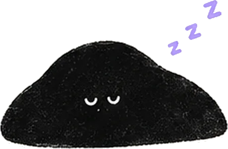
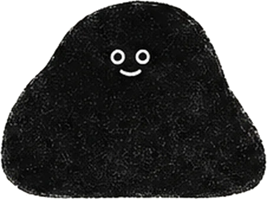

Ulasan bintang lima di App Store Korea dan Jepang.
★★★★★Bagus banget! Semangat, developer!!Versi gratisnya saja sudah cukup untuk memblokir video pendek dan video lain yang bikin nagih. Sejak pakai ini, hari-hariku jadi jauh lebih nyaman!아시유Ulasan App Store, Korea (diterjemahkan)★★★★★Blokir Reels dan Shorts-nya benar-benar ampuhSuka juga karena yang diblokir cuma Reels dan Shorts.철이네멍멍이Ulasan App Store, Korea (diterjemahkan)★★★★★Lucu banget dan aku sukaVersi gratisnya juga sudah bagus... Aku anak SMA dan pasang ini supaya benar-benar belajar.MXXNSTROKEUlasan App Store, Korea (diterjemahkan)★★★★★Cukup bagus!Untuk menahan pemakaian berlebihan, kemampuannya luar biasa untuk yang gratis!Mr.Octopus&FoxUlasan App Store, Jepang (diterjemahkan)
Aplikasi kecil. Angka nyata.
10
medsos: Instagram, YouTube, TikTok, dan 7 lainnya
84%
pengguna yang menyebutkan usianya berumur 24 tahun ke bawah (data Oktober 2026)
0
akun yang perlu dibuat. Kamu masuk lewat halaman resmi tiap medsos.
Gratis
menyembunyikan Reels dan Shorts, tanpa batas waktu
Semua yang bisa dilakukan minulo.Kamu pilih mana yang dimatikan.
ReelsInstagram
ShortsYouTube
Untuk AndaTikTok
SpotlightSnapchat
Pilih yang mau dihilangkan
Buka Instagram cuma untuk balas satu pesan, eh malah keterusan nonton Reels. Matikan Reels, Shorts, atau Untuk Anda sekali ketuk, diatur per aplikasi.
Cuma feed-nya yang hilang · Gratis
Semua tab kecuali DM
Grup kelasBesok jam 9 ya
Sahabatkirim foto
Tim futsalLatihan pindah jam 5
BerandaCariReelsDM
Instagram khusus DM
Nyalakan “Semua tab kecuali DM”, dan Instagram cuma menampilkan chat, tanpa ada yang bisa di-scroll. Bisa juga di TikTok, dan gratis.
Pesan masuk, Reels keluar
Ketuk ikon → terbuka di minulo
Ikon yang biasa, tanpa Reels
minulo memakai Durasi Layar dari Apple untuk mengunci aplikasi resmi. Kalau kamu refleks mengetuk ikon Instagram, yang terbuka justru minulo, tanpa Reels.
Gratis sampai 2 jam per blokir
Temanmu mengirim Reel
Sudah. Habis ini tidak ada feed.
Nonton Reel dari teman, lalu selesai
Buka Reel yang dikirim lewat DM dan tonton. Setelah itu, feed tidak lanjut.
Cuma yang itu, tanpa Reels lain
instagram.com
Nama pengguna
••••••••
Masuk
Kata sandimu tetap di Instagram
Kamu masuk lewat halaman login resmi tiap layanan, jadi minulo tidak pernah melihat kata sandimu. Tidak perlu bikin akun minulo.
Tanpa perlu daftar

Waktu tidur 22.00
Bangun 06.00
Jam yang sama setiap hari
Waktunya tidur, setiap malam
Pilih jam tidur dan jam bangun. Medsos terkunci di jam yang sama setiap hari, jadi yang terakhir kamu lihat sebelum tidur bukan Reel.
Mode tidur · Pro
Waktu yang tidak terbuang di Reels minggu ini
5 j 24 m
SSRKJSM
Hari terkunci berturut-turut
7 hari

Lihat berapa jam yang tidak terbuang di Reels
Setiap minggu, minulo menunjukkan waktu yang tidak kamu habiskan di Reels dan Shorts. Streak menghitung berapa hari berturut-turut kuncinya tetap kamu nyalakan.
Sembunyikan Reels, Shorts, dan Untuk Anda di 10 medsos
Semua tab kecuali DM, untuk Instagram dan TikTok
Kunci aplikasi resmi sampai 2 jam sekali blokir
Tanpa akun, tanpa batas waktu
Pro, kalau mau lebih
US$39,99 / tahun (AS)
Mode tidur: medsos terkunci saat kamu tidur dan terbuka lagi saat kamu bangun, di jam yang sama setiap hari
Jam kerja: pilih hari dan jam kerjamu, lalu aplikasi yang kamu pilih terkunci selama jam itu
Mode Ketat
Batas harian
Blokir lebih dari 2 jam
Harga App Store AS: Pro US$39,99 per tahun atau US$9,99 per bulan. Di Indonesia, App Store menampilkan harga dalam rupiah. Kalau kamu belum pernah berlangganan, paket tahunan dimulai dengan uji coba gratis 7 hari.